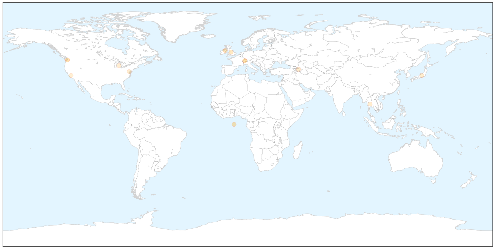
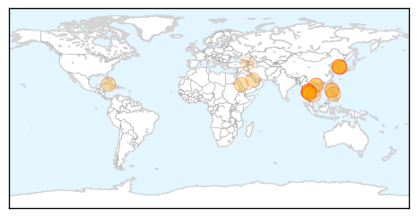
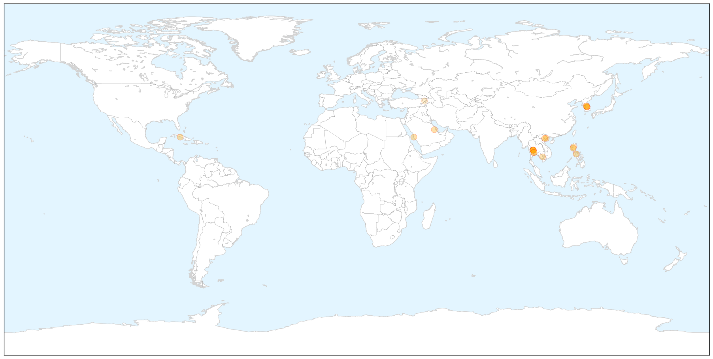
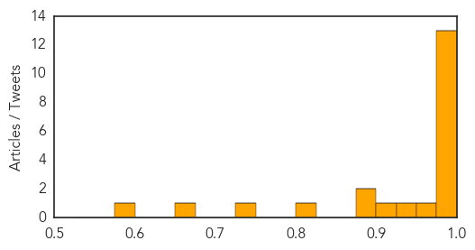

Meningitis
30-Day Web Trend
3 alerts, 0 warnings

30-Day Twitter Trend
0 alerts, 0 warnings

Article Locations

X

Article Confidences

Top Articles:
- 0.898
- Meningitis survivor urges wider use of lifesaving vaccine
- 0.879
- Meninigitis Survivor Urges Wider Use Of Lifesaving Vaccine
- 0.759
- Meningitis B vaccine on the way for England/Scotland
- 0.730
- New meningitis jab for babies
- 0.592
- Amazing Benefits of Drinking Water on Empty Stomach in the Early Morning
- 0.572
- GSK sells two meningitis vaccines to Pfizer for $130 mn
- 0.572
- GSK sells two meningitis vaccines to Pfizer for $130 mn
- 0.572
- GSK sells two meningitis vaccines to Pfizer for $130 mn
- 0.553
- adults can get meningitis too, says Wearside survivor
- 0.545
- Mother of Kalamazoo College student killed by meningitis to testify to CDC
- 0.542
- Pfizer to acquire two meningitis vaccines from GSK for 130 mn
- 0.520
- to Urge CDC Panel to Recommend Meningitis Vaccines
Top Tweets:
-
No tweets found for Jun 23, 2015
MERS
30-Day Web Trend
24 alerts, 1 warnings

30-Day Twitter Trend
8 alerts, 0 warnings

Article Locations

X

Article Confidences
Top Articles:
- 1.000
- Stay alert
- 1.000
- Korea reports 3 more cases, healthy birth after MERS
- 1.000
- Are we following the correct policy?
- 0.999
- Keeping calm
- 0.998
- Confirmed #MERS case
- 0.997
- SGGP English Edition- Vietnam strengthens education of public health about MERS- CoV
- 0.996
- 175 Thais Exposed To Middle East Respiratory Syndrome
- 0.996
- Trickle of new cases lifts South Korea MERS total to 172
- 0.995
- Assessing the Threat of MERS -- Occupational Health & Safety
- 0.994
- MERS outbreak exposes South Korean government’s lack of preparation
- 0.994
- MERS case in Thailand puts Bhutan on high alert
- 0.994
- WHO on five Saudi MERS cases
- 0.989
- H5N1: Orchestrated scientific collaboration: Critical to the control of MERS-CoV
- 0.972
- Lam Dong: Suspected MERS-CoV case quarantined
- 0.945
- Russian tourist quarantined for MERS check
- 0.904
- Fewer Pinoys visiting South Korea
- 0.895
- Cambodia on high alert after 1st case of MERS found in Thailand
- 0.892
- Cambodia on high alert after 1st case of MERS found in Thailand - Xinhua
- 0.810
- With South Korean tourists arriving in droves, Boracay jetty port seeks DOH help on MERS-COV scare
- 0.728
- Koreans in Baguio on alert against MERS
- 0.675
- Samsung’s Lee Apologizes for MERS Outbreak at Company Hospital
- 0.581
- Samsung apologizes for MERS outbreak at company hospital
Top Tweets:
-
No tweets found for Jun 23, 2015